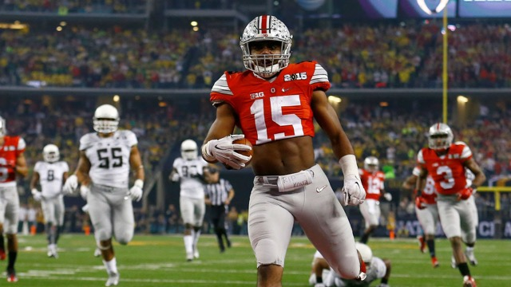
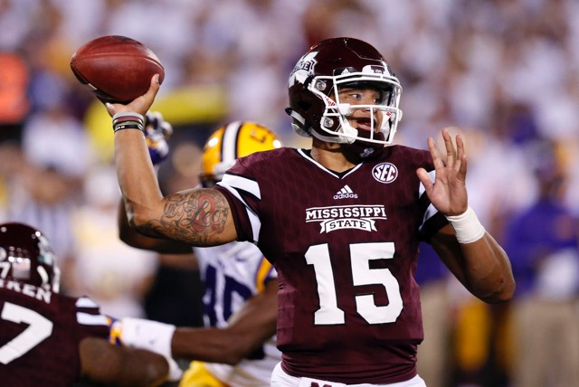
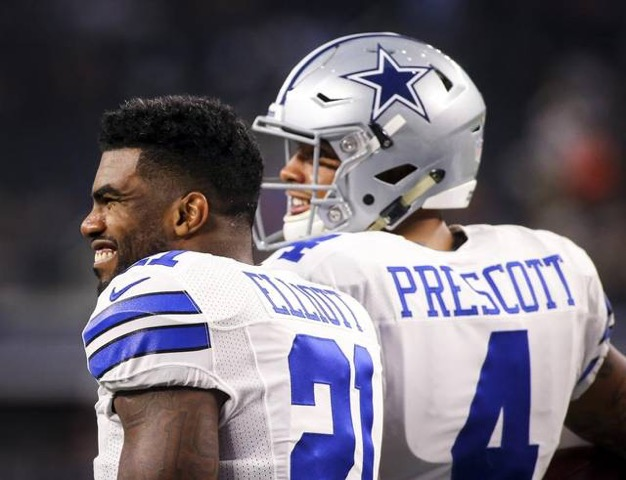
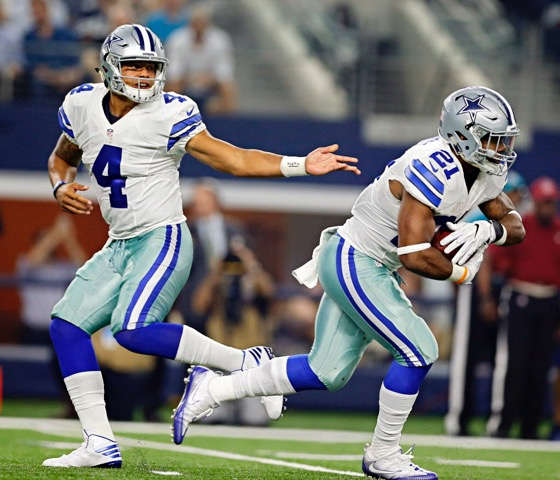

| Ezekiel Elliot |
|---|
|  |
Ezekiel Elliot was born in St. Louis, Missouri on July 22, 1995. He attended John Burroughs High School in St. Louis where he was a three-sport athlete in football, basketball and track. As a Senior at Burroughs High School, Elliot had 3,061 all-purpose yards and 50 total touchdowns. He led them to the state championship three times also but lost all three.
He then attended Ohio State University on a football scholarship where he excelled after earning the starting job at running back as a sophomore. Elliot played so well at Ohio State he decided to forgo his senior season and enter the NFL Draft, where he was drafted 4th overall by the Dallas Cowboys.
Through 9 games this year, Elliott has played so well that he is in the MVP talks as just a rookie, and has helped Dallas to an 8-1 record.
| Dak Prescott |
|---|
|  |
Dak Prescott was born in Sulphur, Louisiana on July 29, 1993. Prescott attended Haughton High School in Haughton, Louisiana where he put up huge numbers as a senior, throwing for 2,680 passing yards, rushing for 951 rushing yards, and had 56 total touchdowns.
Dak then attended Mississippi State University where he started at quarterback from 2013- 2015. He had an extraordinary college career but was overlooked by a lot of teams coming in to the NFL Draft.
The Dallas Cowboys drafted Dak 135th overall in last year’s NFL Draft. Dak, along with Zeke have led the Cowboys to an 8-1 record this season.
|  |  |
|---|
The Cowboys are America's team so I hope you have enjoyed reading about these two fantastic players. I have included some of my favorite videos of these two players for everyone to check out! Hope you enjoy!